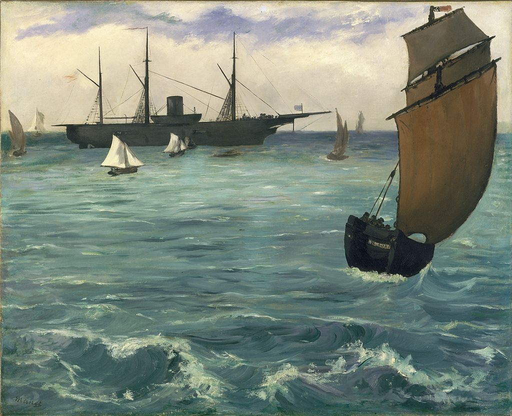

<head>
<meta charset="UTF-8" />
<meta name="keywords" content="drawing, painting" />
<meta name="description" content="drawings by Sunjy" />
<title>Sunjy</title>
<link rel="shortcut icon" type="image/x-icon" href="../../mImages/mCommon/favicon.ico" media="screen" />
<link rel="stylesheet" type="text/css" href="../../mCsses/mCommon/mCssA.css" />
<link rel="stylesheet" type="text/css" href="../../mCsses/mCommon/mCssB.css" />
<link rel="stylesheet" type="text/css" href="../../mCsses/mCommon/mCssC.css" />
<link rel="stylesheet" type="text/css" href="../../mCsses/mCommon/mCssD.css" />
<link rel="stylesheet" type="text/css" href="../../mCsses/mContent/mCssA.css" />
<link rel="stylesheet" type="text/css" href="../../mCsses/mContent/mCssB.css" />
<link rel="stylesheet" type="text/css" href="../../mCsses/mContent/mCssC.css" />
<link rel="stylesheet" type="text/css" href="../../mCsses/mContent/mCssD.css" />
</head>
<script type="text/javascript" src="../../mScripts/mContent/mContentAA.js" /></script>
<script type="text/javascript" src="../../mScripts/mContent/mContentAB.js" /></script>
<script type="text/javascript" src="../../mScripts/mContent/mContentAC.js" /></script>
<script type="text/javascript" src="../../mScripts/mContent/mContentAD.js" /></script>
<script type="text/javascript"></script> 
<script type="text/javascript">
document.write('<div class="mImgAbsolute"></div>');
/*
document.write('<p class="mFontSizeBColor" />From a white paper...</p>');
document.write('<table class="center"><tr><td>');
document.write('');
document.write('</td></tr></table>');
*/
</script>


<script type="text/javascript">
document.write('<p class="mFontSizeBColor" />The Kearsarge at Boulogne</p>');
document.write('<p class="mFontSizeSColor" />“The Kearsarge at Boulogne” by Édouard Manet depicts the anchored Union cruiser USS Kearsarge, the victor of the Battle of Cherbourg over the rebel privateer CSS Alabama. <br><br>Although he had not witnessed the battle, Manet visited Cherbourg within one month after and painted a watercolor of Kearsarge. This oil painting was based on his watercolor.<br><br>Later in 1864, Manet painted an account of the battle itself, “The Battle of the USS Kearsarge and the CSS Alabama.” These two paintings were his first depictions of current events by Manet.<br><br>The subject of the naval battle prompted his visit to the victorious ship that was anchor near Boulogne. The outline of the vessel, however, did not satisfy Manet as it did not feature in his final painting, “The Battle of the Kearsarge and the Alabama” as smoke clouds obscured it.<br></p>');
document.write('<table class="center" /><tr><td>');
document.write('<br>Although he had not witnessed the battle, Manet visited Cherbourg within one month after and painted a watercolor of Kearsarge. This oil painting was based on his watercolor.<br><br>Later in 1864, Manet painted an account of the battle itself, “The Battle of the USS Kearsarge and the CSS Alabama.” These two paintings were his first depictions of current events by Manet.<br><br>The subject of the naval battle prompted his visit to the victorious ship that was anchor near Boulogne. The outline of the vessel, however, did not satisfy Manet as it did not feature in his final painting, “The Battle of the Kearsarge and the Alabama” as smoke clouds obscured it.<br>" />');
document.write('</td></tr></table>');
</script>


